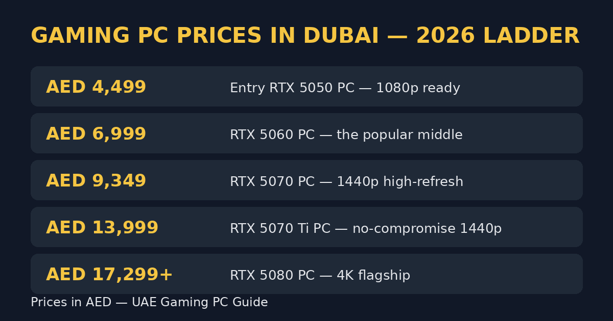

Dubai might be the best city in the region to buy a gaming PC: real stock, real warranty, same-week delivery, and prices that track the global market instead of drifting above it. But "gaming PC" covers everything from a AED 4,499 starter box to a AED 44,999 flagship, and the listings do not explain themselves. This guide lays out the ladder — what each rung actually buys you — and the one price check that protects you at every level.

The current range of gaming pc dubai buyers are choosing from starts at AED 4,499 for an RTX 5050 machine that handles 1080p without breaking a sweat. The crowded middle is where most people land: RTX 5060 systems at AED 4,849–6,999, and an RTX 5060 Ti build at AED 8,999 for high-refresh 1080p and honest 1440p. Above that, RTX 5070 systems at AED 9,349–9,999 own 1440p, the 5070 Ti at AED 13,999 removes the compromises, RTX 5080 systems at AED 17,299–17,999 are the 4K answer, and the RTX 5090 flagship at AED 44,999 exists for people who simply want the best object in the room.
| Rung | Price (AED) | What it plays |
|---|---|---|
| RTX 5050 PC | 4,499 | 1080p, high settings |
| RTX 5060 PC | 4,849 – 6,999 | 1080p high-refresh, entry 1440p |
| RTX 5060 Ti PC | 8,999 | 1440p, high-refresh 1080p |
| RTX 5070 / 5070 Ti PC | 9,349 – 13,999 | 1440p high-refresh |
| RTX 5080 PC | 17,299 – 17,999 | 4K high-refresh |
| RTX 5090 PC | 44,999 | Everything, maximum |
Here is the trick sellers hope you skip. A prebuilt's price is mostly its graphics card wearing a costume. Before judging any system, check gpu prices here and do the subtraction: system price minus card price is what you are paying for the processor, board, memory, storage, case, assembly and warranty. When that remainder looks fair — a few hundred to a couple of thousand dirhams depending on the parts — the system is honest. When a "sale" machine hides a last-generation card at a this-generation price, the subtraction exposes it in ten seconds.
Match the rung to the monitor, not to your ambition. A 1080p screen makes everything above the RTX 5060 invisible; a 1440p high-refresh screen is happiest on the 5070 rungs; 4K is 5080 territory. Buy one rung above your current screen only if a monitor upgrade is genuinely planned this year — otherwise you are paying today for frames you cannot see.
Dubai's ladder is fair, stocked and warrantied — as long as you climb it with the GPU check in your pocket. Pick the rung your monitor justifies, subtract the card, and the right machine picks itself.